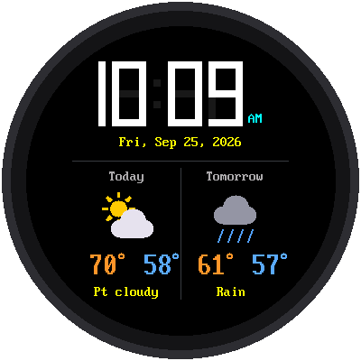
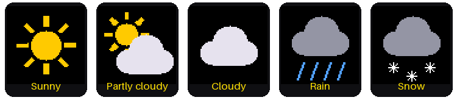

Lab 09: The Weather Clock

Now your watch knows more than the time. It gets the weather forecast from the internet and shows today's and tomorrow's high and low temperatures, with a little picture of the weather.
Welcome to Lab 09
 This is where your watch gets smart. The trick it learns here, asking a
web service for data, is how phone apps get news, sports scores, and
maps too. Let's make time tick!
This is where your watch gets smart. The trick it learns here, asking a
web service for data, is how phone apps get news, sports scores, and
maps too. Let's make time tick!
What You Will Learn
- what a web service is, and how a program asks one a question
- what JSON is
- how latitude and longitude tell the forecast where you are
- how to draw a picture off-screen, so it never flickers
Run It
Open 09-weather-clock.py in Thonny and click Run. The screen says
"Weather clock" while it gets the forecast and sets the time over WiFi.
Then the watch appears, forecast and all.
Asking a Web Service for the Weather
When you visit a website, a computer somewhere sends back a page for people to read. A web service is similar, but it sends back data for programs to read. This kit uses a free weather service called Open-Meteo.
The program asks a question by visiting a web address. It's a long one, but every part means something:
1 2 3 4 5 6 | |
The answer comes back in a format called JSON, which is text that programs can easily read. Here's the important part of a real answer:
1 2 3 4 | |
Can you read it? Today (the first number in each list) has a high of 70.3° and a low of 58.1°. Tomorrow's high is 61.0°. The program rounds these to whole numbers.
Where Are You?
The forecast needs to know where you live. Any place on Earth can be described with two numbers:
- latitude: how far north of the equator (Minneapolis is 44.98)
- longitude: how far east or west (Minneapolis is -93.27; in the United States, longitude is negative)
To get your own forecast, search the web for "your town latitude
longitude", and put the two numbers in config.py:
1 2 | |
From a Number to a Picture
The forecast doesn't say "rainy." It sends a number called a weather code. For example, 3 means "overcast" and 63 means "moderate rain." The program turns each code into one of five pictures:

| Codes | Picture | Words on the screen |
|---|---|---|
| 0, 1 | Sunny | Sunny |
| 2 | Partly cloudy | Pt cloudy |
| 3, 45, 48 | Cloudy | Cloudy, Fog |
| 51 to 67, 80 to 82, 95 to 99 | Rain | Drizzle, Rain, Showers, T-storms |
| 71 to 77, 85, 86 | Snow | Snow |
Drawing on Scrap Paper First
Each icon is made of circles, lines, and triangles. If the program drew them right on the screen, you could see the icon being built, piece by piece. So it draws each one on "scrap paper" first: a small patch of memory called a frame buffer, 64 × 64 pixels. When the icon is finished, the whole thing is sent to the screen in one quick step.
Draw First, Show Later
 Notice the big idea here: build the whole picture where nobody can see
it, then show it all at once. Video games and movies use the same trick,
finishing each frame before it reaches the screen.
Notice the big idea here: build the whole picture where nobody can see
it, then show it all at once. Video games and movies use the same trick,
finishing each frame before it reaches the screen.
Keeping the Forecast Fresh
The watch gets a new forecast every 30 minutes, at half past and on the hour. The one just after midnight moves Tomorrow over to Today. If the internet doesn't answer, the watch keeps showing the old forecast and tries again 5 minutes later.
Try This
- Put in the latitude and longitude of a city far away, like Miami (25.76, -80.19) or Anchorage, Alaska (61.22, -149.90). How different is the forecast?
- Change
TEMPERATURE_UNITinconfig.pyto"celsius". - Near the top of
forecast.pythere's a comment with the whole web address on one line. Paste it into a web browser, and you'll see the same JSON answer the Pico gets!
If It Doesn't Work
- The temperatures show
--. The watch hasn't gotten a forecast yet. Look in Thonny's shell for a line that saysForecast failed, and check your WiFi settings insecrets.py.
Forecast Received!
 You asked a web service a question, read its JSON answer, and turned
weather codes into pictures. Next, you'll build a stopwatch that times
laps to a hundredth of a second.
You asked a web service a question, read its JSON answer, and turned
weather codes into pictures. Next, you'll build a stopwatch that times
laps to a hundredth of a second.